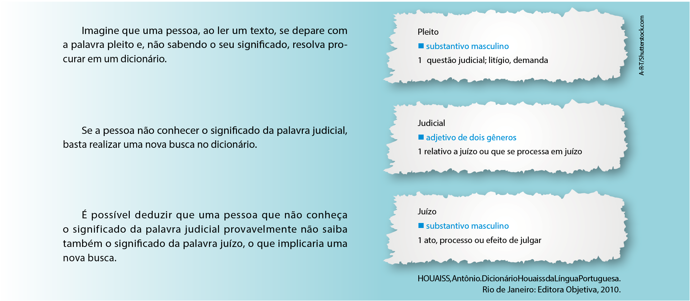

O que aprendi

1. A Ponte Estaiada Octavio Frias de Oliveira, inaugurada
em 2008, já se tornou um ponto turístico da cidade
de São Paulo. A construção de 138 metros de altura e
144 cabos de aço pintados de amarelo liga os bairros
do Brooklin ao Morumbi e admite um fluxo de até
8 mil veículos por hora.
Esboce um esquema da ponte retratada na imagem e
sobre ele marque:
a) três pontos colineares A, B e C.
b) três pontos não colineares D, E e F.
c) duas retas que se intersectam em um ponto G.
d) duas retas que não se intersectam no desenho.
2. Considere os oito vértices, de A a H, indicados na figura
a seguir.
C
E
D
B
F
A
G
H
a) Descreva, no mínimo, sete planos possíveis com
base nos vértices da figura.
ABC, ABF, AEH, EFG, BFG, CDH, ABG, EFC, BFH, AEG, BEH,
ADG.
b) Dos planos descritos no item anterior, quantos e
quais contêm a reta CG?
Três planos: BFG, AEG e CDH.
3. (Enem) Um programa de edição de imagens possibilita
transformar figuras em outras mais complexas.
Deseja-se construir uma nova figura a partir da
original. A nova figura deve apresentar simetria em
relação ao ponto O.
O
A imagem que representa a nova figura é:
a)
O
b)
O
c)
O
d)
O
e)
O
1.
r
A
B
E
F
G
s
C D
Fazendo a simetria dos pontos
A, B, C, D e E em relação ao
ponto O, determina-se a figura
A'B'C'D'OE'. Assim:
Thiago Leite/Shutterstock.com
O
D'
D
A'
C'
C
B'
E'
B A E
PDF_SE_MARISTA_EM_2017_MAT_M11_C31.indd 44 17/07/17 14:57
45
4. (UEPB) Um quadrilátero cujos vértices são dados por
E(–1, 0), F(–2, –2), G(–1, –4) e H(0, –2) possui área
igual a:
a) 8 u.a.
b) 4 u.a.
c) 6 u.a.
d) 10 u.a.
e) 2 u.a.
5. (Insper-SP) O Sr. Antônio resolveu construir um poço
em seu sítio. Ele passou ao engenheiro o esquema
abaixo, indicando a posição da piscina e do vestiário
em relação à localização da casa.
Vestiário
20 m para o norte
8 m para o oeste
Piscina
24 m para o norte
12 m para o leste
Casa
Posição de referência
O Sr. Antônio disse ao engenheiro que queria o poço
numa localização que estivesse à mesma distância da
casa, da piscina e do vestiário. Para atendê-lo o engenheiro deve construir o poço na posição, em relação à
casa, dada por, aproximadamente,
a) 4,2 m para o leste e 13,8 m para o norte.
b) 3,8 m para o oeste e 13,1 m para o norte.
c) 3,8 m para o leste e 13,1 m para o norte.
d) 3,4 m para o oeste e 12, 5 m para o norte.
e) 3,4 m para o leste e 12,5 m para o norte.
6. (UFG-GO) Um caçador de tesouros encontrou um mapa
que indicava a localização exata de um tesouro com as
seguintes instruções:
“Partindo da pedra grande e seguindo 750 passos na
direção norte, 500 passos na direção leste e 625 passos na direção nordeste, um tesouro será encontrado.”
Para localizar o tesouro, ele utilizou um plano cartesiano, representado pela figura a seguir. Neste plano
a escala utilizada foi de 1:100, as medidas são dadas
em centímetros e o ponto A representa a pedra grande
indicada nas instruções.
leste(cm)
norte(cm)
A
12
11
10
98765 1
–10 –9–8–7 –6–5–4–3–2–1 1 2 3 4 5 6 7 8 9 10
432
–1
–2
Considerando que um passo mede 80 cm, encontre
as coordenadas, no plano cartesiano, do ponto onde
se encontra o tesouro e calcule a distância percorrida,
em metros, pelo caçador de tesouros para encontrá-lo.
Do enunciado, temos que cada 1 cm no mapa corresponde a
100 cm na escala real, ou seja, 1 m. Portanto, convertendo passos para metros:
• 750 ⋅ 0,8 = 600 m
• 500 ⋅ 0,8 = 400 m
• 625 ⋅ 0,8 = 500 m
Logo, a distância total percorrida é 600 + 400 + 500 = 1500 m.
Para localizar o tesouro, parte-se do ponto A; temos que A = (0, 0).
Ao caminhar 600 m para o norte e 400 metros para o leste, temos que B = (400, 600). E, ao caminhar 500 m para o nordeste,
chegamos ao tesouro, indicado por T.
Considerando que o ponto cardeal representado pela localiza-
ção norte representa o ângulo de 0°, as condições de movimentação serão: 90° entre norte e leste, 180° entre norte e sul
e 180° entre leste e oeste. Observe o esquema geométrico:
Norte
Noroeste Nordeste
Leste
Sudoeste Sudeste
Oeste
Sul
Assim, as movimentações entre leste e nordeste obedecem à
ordem de 45°.
A figura a seguir representa a situação descrita.
500
45º
45º k
k
C(400,600)
T
sen 45 k
500
2
2
k
500
° = ⇒ = ⇒ = k 250 2
Logo, T( ) 400 + + 250 2, 600 250 2 .
Assim,
A A A 2 2
2
2 2
2
4 u.a.
= + EFH FHG =
⋅
+
⋅
=
Do enunciado, temos:
–3 –2 1
–1
–2
–3
–4
–5
1
–1 0
E
F
G
H
y
x
5. Do enunciado, temos as seguintes posições:
• casa: C(0 ,0)
• vestiário: V(–8, 20)
• piscina: P(12, 24)
• poço: O(x, y).
Assim:
d
CO = dVO = dPO
� �
x y (x 8) (y 20) (x 12) (y 24)
x y (x 8) (y 20)
(x 8) (y 20) (x 12) (y 24)
2x 5y 58
5x y 32
x 3,8 m e y 13,1m
2 2 2 2 2 2
2 2 2 2
2 2 2 2
+ = + + − = − + −
+ = + + −
+ + − = − + −
− = −
+ =
⇒
Portanto, o poço deverá ser construído,
em relação à casa, 3,8 m para o leste e
13,1 m para o norte.
PDF_SE_MARISTA_EM_2017_MAT_M11_C31.indd 45 6/30/17 2:03 PM
46
7. (Cefet-RJ) O professor pediu a João que calculasse a
distância entre os pontos A = (2, 1) e B = (6, 4) no plano
cartesiano. Para isso, João calculou a medida do segmento AB observando um triângulo retângulo que tem
AB como hipotenusa. Após realizar o esboço abaixo,
João fez a seguinte conta: d2 = 32 + 42 ⇒ d = 5.
y5 4 3 2 1
–1
–2 –1
0
0 1 2 3
d
4
3
4 5 6 7 x
A
B
Com base nessas informações, calcule a distância entre
os pontos (–5, 1) e (7, 6).
d 7 5 6 1
d 144 25
d 13
= − [ ] ( ) − + 2 ( ) − 2
= +
=
8. (Feevale-RS) Na fi gura a seguir, o ponto A representa
uma praça, e o ponto B, uma livraria.
B
A
x
y
1
–3
2
–2
3
–1
5 4
–4 –3 –2 –1 1 2 3 4 5
Considerando quilômetro (km) como unidade de medida, a menor distância entre a praça e a livraria é de
aproximadamente:
a) 4 km
b) 5 km
c) 6 km
d) 7 km
e) 8 km
Do enunciado, temos A = (–2, 1) e B = (4, 2).
d ( AB = + 4 2) ( 2 2 + = 2–1) 36 + = 1 37 q 6,08 km
9. (IFSC) O plano cartesiano representado abaixo mostra
o deslocamento de uma pessoa por 4 pontos diferentes, no interior do pavilhão da Oktoberfest. Considere
que essa pessoa partiu do ponto A e formou, com seu
trajeto, segmentos de reta entre os pontos consecutivos A, B, C e D, nessa ordem. Em uma escala em
metros, é correto afi rmar que ela se deslocou:
D
C
B
A
m
m
40
35
30
25
20
15
10
5
5 10 15 20
0
0
a) 5(3 5 +5) m
b) (3 5 5 + ) m
c) 53 m
d) 2(3 2 + 7) m
e) 4(3 5 +5) m
10. (UFJF-MG) Considere os pontos A = (2, 0), B = (−1, 3)
e C = (− − 1, 3) em um plano cartesiano.
a) Determine o ângulo ABC ˆ .
d 1 2 3 0 d 2 3
d 1 2 3 0 d 2 3
d 1 1 3 3 d 2 3
AB
2 2
AB
AC
2 2
BC
BC
2 2
[ ] AC
( )
( )
( )
( )
( )
( )
= − − + − ⇒ =
= − − + − − ⇒ =
= − − − + − − ⇒ =
Como todos os lados do triângulo ABC são iguais, ABC é um
triângulo equilátero e, portanto, ABC ˆ = 60°.
b) Calcule a área do triângulo ABC.
A 3
4
2 3 3
4
3 3 u. a.
triângulo equilátero
2
2
� ( )
=
⋅
=
⋅
=
11. (PUC-RJ) Se os pontos A = (–1, 0), B = (1, 0) e
C = (x, y) são vértices de um triângulo equilátero, então
a distância entre A e C é:
a) 1 b) 2 c) 4 d) 2 e) 3
11. d d
d 1 1 0 0
d 2
AC AB
AC
2 2
AC
[ ] ( )
=
= − − + −
=
9. d (15 5) (10 5) d 125 d 5 5 m
d (0 15) (30 10) d 625 d 25 m
d (20 0) (40 30) d 500 d 10 5 m
AB
2 2
AB AB
BC
2 2
BC BC
CD
2 2
CD CD
= − + − ⇒ = ⇒ =
= − + − ⇒ = ⇒ =
= − + − ⇒ = ⇒ =
Portanto, o deslocamento da pessoa é dado por:
d d d d d 5 5 25 10 5
d 15 5 25 m d 5 3 5 5 m
AB BC CD
( )
= + + ⇒ = + +
⇒ = + ⇒ = ⋅ +
PDF_SE_MARISTA_EM_2017_MAT_M11_C31.indd 46 7/13/17 6:30 AM
47
12. (Udesc) Considere num sistema de coordenadas cartesianas o polígono com vértices nos pontos A(-3, -3),
B(3, 1), C(-3, 3) e D(-1, -1). O quadrilátero determinado
pelos pontos médios dos segmentos AB, BC, CD e DA
nesta ordem, é um:
a) losango
b) retângulo
c) trapézio
d) quadrado
e) paralelogramo
13. (UERGS-RS) Para que os pares (m – 1, 2), (3, 5) e (4, 7)
representem 3 que estão na mesma linha reta é necessário que o valor de m seja igual a:
a) 1
2
b) 3
2
c) 5
2
d) 7
2
e) 9
2
14. (Vunesp) Sejam P = (a, b), Q = (1, 3) e R = (−1, −1)
pontos do plano. Se a + b = 7, determine P de modo
que P, Q e R sejam colineares.
Como os pontos estão alinhados, temos:
a b 1
1 3 1
1 1 1
0
a 3 b ( 1) 1 ( 1) [3 ( 1) a ( 1) 1 b] 0
3a b 1 [ 3 a b] 0
4a 2b 2 0 (I)
− −
=
⋅ + ⋅ − + ⋅ − − ⋅ − + ⋅ − + ⋅ =
− − − − − + =
− + =
Do enunciado, sabemos que:
a + b = 7 ⇒ b = 7 – a (II)
Substituindo (II) em (I):
4a – 2(7 – a) + 2 = 0 ⇒ a = 2
E, portanto, b = 5.
Logo, P(2, 5).
15. (Vunesp) Chegou às mãos do Capitão Jack Sparrow,
do Pérola Negra, o mapa da localização de um grande
tesouro enterrado em uma ilha do Caribe.
Ao aportar na ilha, Jack, examinando o mapa, descobriu
que P1 e P2 se referem a duas pedras distantes 10 m
em linha reta uma da outra, que o ponto A se refere a
uma árvore já não mais existente no local e que:
13. Como os pontos estão alinhados, temos:
m 1 2 1
3 5 1
4 7 1
0
(m 1) 5 2 4 3 7 [4 5 7 (m 1) 3 2] 0
5m 5 8 21 [20 7m 7 6] 0
2m 5 0
m
− 5 2
=
− ⋅ + ⋅ + ⋅ − ⋅ + ⋅ − + ⋅ =
− + + − + − + =
− + =
=
m 1 2 1
3 5 1
4 7 1
0
(m 1) 5 2 4 3 7 [4 5 7 (m 1) 3 2] 0
5m 5 8 21 [20 7m 7 6] 0
2m 5 0
m
− 5 2
=
− ⋅ + ⋅ + ⋅ − ⋅ + ⋅ − + ⋅ =
− + + − + − + =
− + =
=
12. Sejam E, F, G e H, respectivamente, os pontos médios dos segmentos
AB, BC, CD e DA.
3
3
–3
–3 4 5
4
–4
–4 2
2
–2
–2 1
1
–1–1
0
0
y
x
B
F
G
C A
D
H E
d 0 0 1 2 d 3
d 2 0 1 2 d 5
d 2 2 2 1 d 3
d 2 0 2 1 d 5
EF
2 2
EF
FG
2 2
FG
GH
2 2
GH
HE
2 2
HE
[ ]
[ ]
( )
( )
( )
( )
( )
( ) ( )
( )
= − + − − ⇒ =
= − − + − ⇒ =
= − − − + − − ⇒ =
= − + + − − − ⇒ =
Como as medidas são diferentes, o
polígono EFGH não é um quadrado.
Além disso,
d 2 0 2 2 d 2 5
FH
2 2
= − ( ) + + ( ) − − ⇒ = FH
Do teorema de Pitágoras, concluímos
que dFH 2 ≠ dHE 2 + dEF2. Portanto, o
polígono EFGH não é um quadrado
nem um losango.
Já o segmento EH é base média do
triângulo ABD, e FG do triângulo BCD.
Portanto, EH // BD // FG. Procedendo
de forma análoga em relação aos
segmentos EF e GH, temos que
EFGH é um paralelogramo.
Gráficos: Ericson Guilherme Luciano
(a) ele deve determinar um ponto M1 girando o segmento P1A em um ângulo de 90° no sentido anti-horário,
a partir de P1;
(b) ele deve determinar um ponto M2 girando o segmento P2A em um ângulo de 90° no sentido horá-
rio, a partir de P2;
(c) o tesouro está enterrado no ponto médio do segmento M1M2.
Jack, como excelente navegador, conhecia alguns conceitos matemáticos. Pensou por alguns instantes e introduziu um sistema de coordenadas retangulares com
origem em P1 e com o eixo das abscissas passando
por P2. Fez algumas marcações e encontrou o tesouro.
A partir do plano cartesiano definido por Jack Sparrow,
determine as coordenadas do ponto de localização
do tesouro